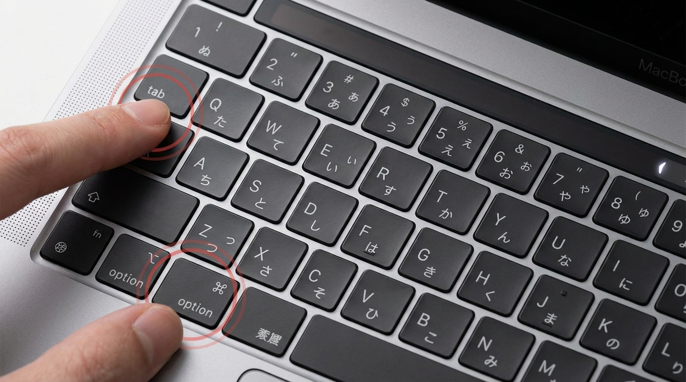

📱 このページでは、ELECOM Touch Book キーボードとiPadを接続する方法をご案内します。
初回接続後は、2回目以降は自動で接続されます。安心して作業を進めてください。
1
iPadの設定を開く
iPadのホーム画面から「設定」アプリをタップして開きます。
設定アプリは歯車のアイコンです。
💡 ポイント
設定アプリが見つからない場合は、画面を下にスワイプして検索バーから「設定」と入力してください。
2
Bluetoothをオンにする
設定画面の中から「Bluetooth」を選択します。
Bluetoothがオフになっている場合は、スイッチをタップしてオンにしてください。
💡 ポイント
Bluetoothをオンにすると、緑色に変わります。
これで接続の準備が整いました。
これで接続の準備が整いました。
3
Touch Bookをペアリングモードにする
Touch Bookのキーボードで、「option」キーと「tab」キーを同時に3秒間長押しします。

💡 ポイント
スイッチ横のランプが点滅し始めたら、ペアリングモードに入った証拠です。
ランプが点滅している間に、次のステップに進んでください。
ランプが点滅している間に、次のステップに進んでください。
4
iPadでTouch Bookを選択
iPadのBluetooth設定画面に「Touch Book」または「ELECOM」という名前のデバイスが表示されます。
これをタップして接続します。
💡 ポイント
デバイス名が表示されるまで、数秒かかる場合があります。
表示されない場合は、ステップ3のペアリング操作をもう一度試してください。
表示されない場合は、ステップ3のペアリング操作をもう一度試してください。
5
接続完了を確認
接続が成功すると、「Touch Book」の横に「接続済み」と表示されます。
これでキーボードが使えるようになりました！
✅ 確認方法
キーボードで何か文字を入力してみてください。
iPadに文字が表示されれば、接続は成功です。
iPadに文字が表示されれば、接続は成功です。
💡 知っておくと便利なこと
- 2回目以降は自動接続：一度接続すれば、次回からはキーボードの電源を入れるだけで自動的に接続されます。
- 充電について：Touch BookはUSB-Cケーブルで充電します。バッテリー残量が少なくなったら、充電を忘れずに。
- 複数のiPadでの使用：毎日違うiPadを使う場合でも、上記の手順で接続すれば問題なく使えます。
- キーボードの電源オフ：使い終わったら、キーボードの電源をオフにすることでバッテリーを節約できます。
🔧 困ったときは
-
Q: デバイスが表示されない
A: キーボードのペアリングモードを再度試してください。option + tab を3秒間しっかり長押しして、ランプが点滅しているか確認してください。 -
Q: 接続できない
A: iPadのBluetoothを一度オフにして、再度オンにしてから試してください。または、iPadを再起動すると改善することがあります。 -
Q: 文字が入力できない
A: 接続が途切れている可能性があります。Bluetooth設定画面で「Touch Book」が「接続済み」になっているか確認してください。 -
Q: キーボードの電源が入らない
A: バッテリーが切れている可能性があります。USB-Cケーブルで充電してから、もう一度試してください。 -
Q: それでも解決しない場合
A: 情報システム部門（内線: XXXX / メール: [email protected]）にお問い合わせください。